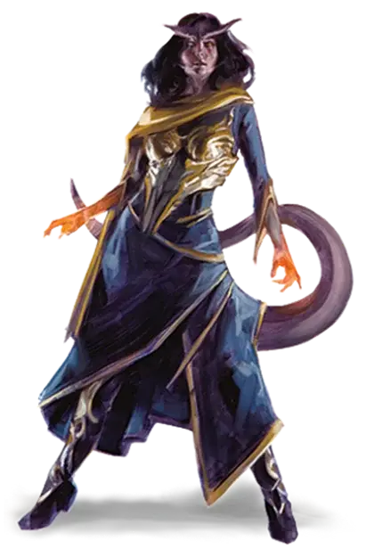

Тифлинг
Tiefling

«Но ты же видишь, как люди смотрят на тебя, дитя дьявола».
Взгляд чёрных глаз, холодных, как зимняя метель, был устремлён прямо в её душу. Её потрясла неожиданная серьёзность его тона.
«Как там говорится? — спросил он. — Один — любопытство, двое — заговор...»
«А трое — проклятье. — закончила она. — Думаешь, я никогда не слышала этот бред?»
«Конечно, слышала». Когда она уставилась на него, он добавил: «Для этого не обязательно копаться в твоих мыслях, девочка. Это ноша каждого тифлинга. Некоторые ломаются под её тяжестью, некоторые спокойно несут это бремя, некоторые даже наслаждаются им». Он снова наклонил голову, разглядывая её с озорным блеском в глазах. «А ты с этим борешься, не так ли? Как дикая кошка, я бы сказал. Все упрёки и замечания лишь делают твои когти острее».
— Эрин М. Эванс, Серные ангелы
Быть тифлингом — значит постоянно натыкаться на пристальные взгляды и перешёптывания, терпеть страдания и оскорбления, видеть страх и недоверие в глазах каждого встречного. Беда в том, что тифлинги знают причину этого — договор, заключённый много поколений назад и позволивший Асмодею — владыке Девяти Преисподних — внести вклад в их родословную. Такая внешность и природа — не их вина, а последствие древнего прегрешения, расплачиваться за которое предстоит им, их детям, и детям их детей.
Дьявольская родословная
Тифлинги произошли от людей, и по большому счёту всё еще выглядят как люди. Тем не менее, их дьявольское наследие оставило заметный отпечаток на внешности. У тифлингов есть большие рога, принимающие различные формы: у некоторых витые рога, как у барана, у других длинные и прямые, как у газели, у третьих спиральные, как у антилопы. Их толстый хвост, от 120 до 150 сантиметров длиной, вьётся между ног, похлёстывая их, когда тифлинг нервничает. Острые зубы превращают улыбку в звериный оскал, а их глаза сплошного цвета без намёка на зрачок или белок, обычно чёрного, красного, белого, серебряного или золотого цвета. Цвет кожи тифлингов может принимать все тона, характерные для человека, а также различные оттенки красного. Их волосы, струящиеся из-за рогов, обычно тёмные, от чёрного или коричневого до тёмно-красного, синего или фиолетового.
Самодостаточные и недоверчивые
Тифлинги живут небольшими общинами, в основном в людских городах, чаще всего в самых трущобах, где из них вырастают жулики, воры и короли преступного мира. Иногда они живут группами среди других меньшинств, которые относятся к ним с чуть большим уважением.
У тифлингов нет родины, и они знают, что им нужно найти свой путь в жизни, и что им понадобится сила для выживания. Они с опаской относятся ко всем, кто называется их другом, но когда кто-то проявляет доверие по отношению к ним, они стремятся отплатить той же монетой. Для того, кто заслужит верность тифлинга, он станет верным другом и надёжным союзником до конца своей жизни.
Имена тифлингов
Имена тифлингов можно разделить на три категории. Тифлинги, выросшие в какой-либо другой культуре, часто носят имена, характерные для этой среды. Некоторые носят имена, передающиеся из поколения в поколение и произошедшие из Инфернального языка. А некоторые молодые тифлинги, стремящиеся найти своё место в этом мире, берут имена, отражающие какую-либо добродетель или другую концепцию, а затем стараются воплотить её в жизнь. Для некоторых выбранное имя становится путеводной звездой, для других — тяжким грузом.
Мужские инфернальные имена: Акменос, Амнон, Баракас, Дамакос, Йадос, Кайрон, Люцис, Мелех, Мордай, Мортос, Пелайос, Скамос, Терай, Экемон.
Женские инфернальные имена: Акта, Анакис, Брисеис, Дамая, Каллиста, Криелла, Лерисса, Макария, Немея, Орианна, Риета, Фелая, Эа.
«Идейные» имена: Безрассудство, Вера, Идеал, Искусство, Музыка, Мука, Надежда, Напев, Нигде, Открытость, Отчаяние, Падаль, Поиск, Почтение, Поэзия, Превосходство, Скорбь, Слава, Случайность, Страх, Усталость.
Взаимное недоверие
Люди склонны с недоверием относиться к тифлингам, полагая, что их дьявольское наследие выражается не только во внешнем виде, но и в их личных качествах. Владельцы магазинов с особой тщательностью следят за вошедшими к ним тифлингами, городская стража может пройтись за тифлингом пару кварталов — на всякий случай, а молва часто винит тифлингов в происходящих вокруг странностях. На самом же деле родословная тифлингов ни в коей мере не влияет на их характер. Но годы жизни в атмосфере недоверия не проходят даром, по-разному сказываясь на поведении тифлингов. Некоторые соответствуют распространённым стереотипам, другие — нет. Большинство просто относятся к другим так же, как те относятся к ним. Вырастая в таком недоверии, тифлинги зачастую учатся преодолевать предрассудки при помощи обаяния или запугивания.
Особенности тифлингов
Из-за своего дьявольского происхождения все тифлинги обладают некоторыми общими качествами.
Увеличение характеристик. Значение вашего Интеллекта увеличивается на 1, а значение Харизмы увеличивается на 2.
Возраст. Тифлинги взрослеют тогда же, когда и люди, но живут немного дольше.
Мировоззрение. Любое.
Размер. Тифлинги по росту и телосложению схожи с людьми. Ваш размер — Средний.
Скорость. Ваша базовая скорость ходьбы составляет 30 футов.
Тёмное зрение. Благодаря вашему дьявольскому наследию, вы отлично видите при тусклом свете и в темноте. На расстоянии в 60 футов вы при тусклом освещении можете видеть так, как будто это яркое освещение, и в темноте так, как будто это тусклое освещение. В темноте вы не можете различать цвета, только оттенки серого.
Адское сопротивление. Вы получаете сопротивление урону огнём.
Дьявольское наследие. Начиная с 3-го уровня, вы можете один раз наложить заклинание адское возмездие [hellish rebuke] как заклинание 2-го уровня с помощью этой особенности. Начиная с 5-го уровня, вы также можете накладывать заклинание тьма [darkness] с помощью этой особенности. После накладывания одного из этих заклинаний с помощью особенности вы должны закончить продолжительный отдых, прежде чем сможете вновь наложить это заклинание таким образом.
Кроме того, вы знаете заговор чудотворство [thaumaturgy].
Базовой характеристикой заклинаний для этих заклинаний является Харизма.
Языки. Вы можете говорить, читать и писать на Общем и Инфернальном.
Подрасы тифлингов
По решению Мастера вы можете создать персонажа тифлинга, у которого есть особая связь с одним из Лордов Девяти Преисподних. Эта связь представлена подрасой.
Особенности подрасы (SCAG)
Если у вашего тифлинга есть подраса, выберите одну из приведённых ниже опций, которая наиболее соответствует инфернальному существу, связанному с семьёй тифлинга.
Особенности выбранной подрасы заменяют «Увеличение характеристик» и «Дьявольское наследие» тифлингов указанные в «Книге игрока». Но здесь есть одно исключение – тифлинги связанные с Асмодеем. Эти тифлинги используют черты из «Книги игрока».
Тифлинг Фаэруна (SCAG)
Источник: Sword Coast Adventurer’s Guide
Мастер может позволить вам взять приведённые варианты персонажа тифлинга, хотя стоит иметь в виду, что варианты «Дьявольский язык», «Адское пламя» и «Крылатый» являются взаимоисключающими.
Внешний вид. Ваш тифлинг может быть не похож на других тифлингов. Вместо обладания физическими характеристиками, приведенными выше, выберите 1к4 + 1 следующих особенностей: небольшие рожки; клыки или острые зубы; раздвоенный язык; кошачьи глаза; шесть пальцев на руках; козлиные ноги; копыта; раздвоенный хвост; грубая или чешуйчатая кожа красного или тёмно-синего цвета; не отбрасывание тени или отсутствие отражения; запах серы.
Звероподобный. Значение вашей Ловкости увеличивается на 2, а значение Интеллекта на 1. Эта особенность заменяет особенность «Увеличение характеристик».
Дьявольский язык. Начиная с 3-го уровня, вы можете накладывать заклинание очарование личности [charm person] как заклинание 2-го уровня с помощью этой особенности. Начиная с 5-го уровня, вы также можете накладывать заклинание речь златоуста [enthrall] с помощью этой особенности. После накладывания одного из этих заклинаний с помощью особенности вы должны закончить продолжительный отдых, прежде чем сможете вновь наложить его таким образом.
Кроме того, вы знаете заговор злая насмешка [vicious mockery].
Базовой характеристикой заклинаний для этих заклинаний является Харизма. Эта особенность заменяет особенность «Дьявольское наследие».
Адское пламя. Начиная 3-го уровня, вы можете накладывать заклинание огненные ладони [burning hands] как заклинание 2-го уровня с помощью этой особенности.
После накладывания этого заклинания с помощью особенности вы должны закончить продолжительный отдых, прежде чем сможете вновь наложить его таким образом.
Эта особенность заменяет заклинание адское возмездие [hellish rebuke] из особенности «Дьявольское наследие»
Крылатый. У персонажа из лопаток вырастают перепончатые крылья. Персонаж получает скоростью полёта 30 футов, если не носит тяжёлый доспех. Эта особенность заменяет особенность «Дьявольское наследие».
Асмодей (MTF)
Источник: Mordenkainen’s Tome of Foes
Тифлинги, связанные с Нессусом, повелевают силами огня и тьмы, ведомые более острым, чем у других, интеллектом, как и подобает тем, кто связан с самим Асмодеем. Эти тифлинги используют «Увеличение характеристик» и «Дьявольское Наследие» из «Книги игрока».
Увеличение характеристик. Значение вашего Интеллекта увеличивается на 1, а значение Харизмы увеличивается на 2.
Дьявольское наследие. Начиная с 3-го уровня, вы можете накладывать адское возмездие [hellish rebuke] как заклинание 2-го уровня с помощью этой особенности. Начиная с 5-го уровня, вы также можете накладывать заклинание тьма [darkness] с помощью этой особенности. После накладывания одного из этих заклинаний с помощью особенности вы должны закончить продолжительный отдых, прежде чем сможете вновь наложить его таким образом.
Кроме того, вы знаете заговор чудотворство [thaumaturgy]. Базовой характеристикой заклинаний для этих заклинаний является Харизма.
Вельзевул (MTF)
Источник: Mordenkainen’s Tome of Foes
Рассыпающееся царство Маладомини находится под властью Вельзевула, который превосходно совращает тех, чьи мелкие грехи можно превратить во влекущие проклятье поступки. Тифлинги, связанные с этим архидьяволом, прекрасно совращают других и физически, и психологически.
Увеличение характеристик. Значение вашей Харизмы увеличивается на 2, а значение Интеллекта увеличивается на 1.
Наследие Маладомини. Начиная с 3-го уровня, вы можете накладывать луч болезни [ray of sickness] как заклинание 2-го уровня с помощью этой особенности. Начиная с 5-го уровня, вы также можете накладывать заклинание корона безумия [crown of madness] с помощью этой особенности. После накладывания одного из этих заклинаний с помощью особенности вы должны закончить продолжительный отдых, прежде чем сможете вновь наложить его таким образом.
Кроме того, вы знаете заговор чудотворство [thaumaturgy]. Базовой характеристикой заклинаний для этих заклинаний является Харизма.
Гласия (MTF)
Источник: Mordenkainen’s Tome of Foes
Гласия, криминальный авторитет Преисподних, дарует своим тифлингам магию, полезную для совершения преступлений.
Увеличение характеристик. Значение вашей Харизмы увеличивается на 2, а значение Ловкости увеличивается на 1.
Наследие Малболга. Начиная с 3-го уровня, вы можете накладывать заклинание маскировка [disguise self] с помощью этой особенности. Начиная с 5-го уровня, вы также можете накладывать заклинание невидимость [invisibility] с помощью этой особенности. После накладывания одного из этих заклинаний с помощью особенности вы должны закончить продолжительный отдых, прежде чем сможете вновь наложить его таким образом.
Кроме того, вы знаете заговор малая иллюзия [minor illusion]. Базовой характеристикой для этого заклинания является Харизма.
Диспатер (MTF)
Источник: Mordenkainen’s Tome of Foes
Громадный город Дис занимает значительную часть второго слоя Преисподних. Это место, где секреты раскрываются тем, кто больше заплатит, что делает тифлингов Диспатера прекрасными шпионами и разведчиками.
Увеличение характеристик. Значение вашей Харизмы увеличивается на 2, а значение Ловкости увеличивается на 1.
Наследие Диса. Начиная с 3-го уровня, вы можете накладывать заклинание маскировка [disguise self] с помощью этой особенности. Начиная с 5-го уровня, вы также можете накладывать заклинание обнаружение мыслей [detect thoughts] с помощью этой особенности. После накладывания одного из этих заклинаний с помощью особенности вы должны закончить продолжительный отдых, прежде чем сможете вновь наложить его таким образом.
Кроме того, вы знаете заговор чудотворство [thaumaturgy]. Базовой характеристикой для этих заклинаний является Харизма.
Зариэль (MTF)
Источник: Mordenkainen’s Tome of Foes
Тифлинги, имеющие кровную связь с Зариэль, физически сильнее прочих тифлингов и получают полезные в бою магические способности.
Увеличение характеристик. Значение вашей Харизмы увеличивается на 2, а значение Силы увеличивается на 1.
Наследие Авернуса. Начиная с 3-го уровня, вы можете накладывать палящую кару [searing smite] как заклинание 2-го уровня с помощью этой особенности. Начиная с 5-го уровня, вы также можете накладывать заклинание клеймящая кара [branding smite] с помощью этой особенности. После накладывания одного из этих заклинаний с помощью особенности вы должны закончить продолжительный отдых, прежде чем сможете вновь наложить его таким образом.
Кроме того, вы знаете заговор чудотворство [thaumaturgy]. Базовой характеристикой для этих заклинаний является Харизма.
Левистус (MTF)
Источник: Mordenkainen’s Tome of Foes
Левистус правит заледеневшей Стигией и известен как архидьявол, предлагающий сделку тем, кто неотвратимо обречён.
Увеличение характеристик. Значение вашей Харизмы увеличивается на 2, а значение Телосложения увеличивается на 1.
Наследие Стигии. Начиная с 3-го уровня, вы можете накладывать доспех Агатиса [armor of Agathys] как заклинание 2-го уровня с помощью этой особенности. Начиная с 5-го уровня, вы также можете накладывать заклинание тьма [darkness] с помощью этой особенности. После накладывания одного из этих заклинаний с помощью особенности вы должны закончить продолжительный отдых, прежде чем сможете вновь наложить его таким образом.
Кроме того, вы знаете заговор луч холода [ray of frost]. Базовой характеристикой для этих заклинаний является Харизма.
Маммон (MTF)
Источник: Mordenkainen’s Tome of Foes
Великий ростовщик Маммон превыше всего любит деньги. Связанные с ним тифлинги великолепно собирают и сохраняют богатство.
Увеличение характеристик. Значение вашей Харизмы увеличивается на 2, а значение Интеллекта увеличивается на 1.
Наследие Минауроса. Начиная с 3-го уровня, вы можете накладывать заклинание Тензеров парящий диск [Tenser’s floating disk] с помощью этой особенности. Начиная с 5-го уровня, вы также можете накладывать заклинание волшебный замок [arcane lock] с помощью этой особенности. После накладывания одного из этих заклинаний с помощью особенности вы должны закончить продолжительный отдых, прежде чем сможете вновь наложить его таким образом.
Кроме того, вы знаете заговор волшебная рука [mage hand]. Базовой характеристикой для этих заклинаний является Харизма.
Мефистофель (MTF)
Источник: Mordenkainen’s Tome of Foes
В ледяном царстве Кании Мефистофель даёт магическую силу всем, кто будет ему молиться. Связанные с ним тифлинги немного владеют тайной магией.
Увеличение характеристик. Значение вашей Харизмы увеличивается на 2, а значение Интеллекта увеличивается на 1.
Наследие Кании. Начиная с 3-го уровня, вы можете накладывать огненные ладони [burning hands] как заклинание 2-го уровня с помощью этой особенности. Начиная с 5-го уровня, вы также можете накладывать заклинание горящий клинок [flame blade] с помощью этой особенности. После накладывания одного из этих заклинаний с помощью особенности вы должны закончить продолжительный отдых, прежде чем сможете вновь наложить его таким образом.
Кроме того, вы знаете заговор волшебная рука [mage hand]. Базовой характеристикой для этих заклинаний является Харизма.
Фьёрна (MTF)
Как мастерский манипулятор, Фьёрна дарует связанным с ней тифлингам сильную личность.
Увеличение характеристик. Значение вашей Харизмы увеличивается на 2, а значение Мудрости увеличивается на 1.
Наследие Флегетоса. Начиная с 3-го уровня вы можете накладывать очарование личности [charm person] как заклинание 2-го уровня с помощью этой особенности. Начиная с 5-го уровня, вы также можете накладывать заклинание внушение [suggestion] с помощью этой особенности. После накладывания одного из этих заклинаний с помощью особенности вы должны закончить продолжительный отдых, прежде чем сможете вновь наложить его таким образом.
Кроме того, вы знаете заговор дружба [friends]. Базовой характеристикой для этих заклинаний является Харизма.
Подрасы тифлингов из «Unearthed Arcana»
Тифлинг Бездны
Все тифлинги Бездны ведут свою родословную от демонов Бездны. Эти тифлинги имеют следующие особенности, которые заменяют «Увеличение характеристик» и «Дьявольское наследие» и «Адское сопротивление» и языки тифлингов указанные в «Книге игрока».
Увеличение характеристик. Значение вашей Харизмы увеличивается на 2, а значение Телосложения на 1.
Магия Бездны. Каждый раз, когда вы заканчиваете продолжительный отдых, вы получаете возможность накладывать заговоры и заклинания полученные случайным образом из короткого списка. На 1-м уровне, вы можете наложить заговор. Когда вы достигнете 3-го уровня, вы также можете наложить заклинание 1-го уровня. На 5 уровне вы может наложить заклинание 2-го уровня.
Вы можете наложить заклинание, полученное от этой черты один раз, пока не завершите свой следующий продолжительный отдых. Вы можете накладывать заговор, полученный от этой черты по желанию, как обычно. Для заклинаний 1-го уровня, эффект которых изменяется, если использовать ячейку заклинания 2-го уровня или выше, вы накладываете заклинание, как если бы использовали ячейку 2-го уровня. Заклинания 2-го уровня накладываются, как если бы использовали ячейку 2-го уровня.
В конце каждого продолжительного отдыха вы теряете заговор и заклинания, ранее предоставленные этой особенностью, даже если вы их не накладывали. Вы заменяете эти заговоры и заклинания, бросая на новые по таблице «Заклинания магии Бездны». Совершайте бросок для заговора и каждого заклинания отдельно. Если вы бросаете одно и то же заклинание или заговор, которое вы получили в конце предыдущего продолжительного отдыха, бросайте снова, пока не получите другой результат.
Стойкость Бездны. Максимум ваших хитов увеличивается на половину вашего уровня (минимум 1).
Языки. Вы можете говорить, читать и писать на Общем и языке Бездны.